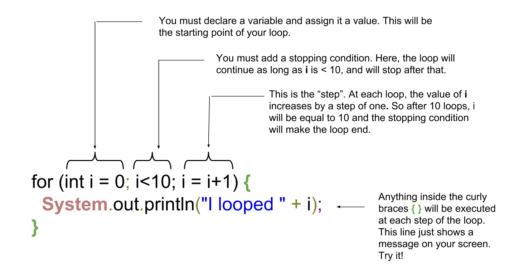

Float priceItemInEuros;
priceItemInEuros = 5.99f;
Label productLabel = new Label();
if (priceItemInEuros < 6) {
productLabel.setText("cheap product!");
}CODAPPS
Conditional statements, loops and data structures
'Escape' or 'o' to see all sides, F11 for full screen, 's' for speaker notes
1. Useful additions to your coding toolkit
What we have seen so far is really the essential of coding: variables, methods and classes.
We can code an app with this. But what makes programming feel like magic is when we take advantage of three things computers (and mobile phones) are really good at:
they can adapt their behavior to changing environments
they are really fast
they can handle huge volumes of things
In this lesson, we learn how to do these 3 things. Promised, this is the last of the "technical" lessons. After this one you will create a great app.
2. Making your app adapt
If your app does always the same thing, it will be quickly boring. What you need is the ability to code something that says:
"if the user of the app chooses this option, then do this. If not, do that instead"
This need is so universal that all programming languages have a way to express this "if this is true, then do that".
The formal name for it is a conditional statement.
a. How to write a conditional statement
Creating a conditional statement
This will put the text "cheap product" in the Label, only if the price of the product is under 6.
Let’s have a closer look at the syntax (the boring part, but where any mistake will make your build fail)

Figure 1. Detailing how a conditional statement works
That’s about it for conditional statements.
We have seen a condition that said "if this thing is lower than this other thing".
We just need to learn to write "if these things are equal" or "if these things are unequal", because these are frequent use cases:
b. How to write an "equal" and "unequal" condition
Equal and unequal statements
Float priceItemInEuros;
priceItemInEuros = 5.99f;
Label productLabel = new Label();
if (priceItemInEuros == 5.99) { (1)
productLabel.setText("the price is exactly 5.99");
}
if (priceItemInEuros != 5.99) { (2)
productLabel.setText("the price is different from 5.99");
}| 1 | the == is surprising. Why twice =? Just because = is already taken to mean that we assign a value to a variable. |
| 2 | != looks weird, why not just ≠? Well try to find ≠ on your keyboard 😉 |
There are other important subtleties about conditionals, but we leave them for the "cheatsheet" lesson in this module.
A last remark: we’ll see in the app that we use conditional statements a lot because they make the app so powerful and flexible.
Some even joke that many products with "artificial intelligence" sold out there actually just have plenty of conditional statements in their code to mimic an "intelligent behavior" 😉
(for example, you could build a chat bot with conditional statements: "if the person asks x, answer this". "if they asks y, answer that". Etc…)
You say: "We added AI to our product"
— I Am Devloper (@iamdevloper) February 10, 2017
I hear: "We added a bunch more IF statements to our codebase"
3. Making your app go fast
Computers can do things quickly, we know that. If you write these three lines of code:
Three lines of code
Float priceItemInEuros = 5.99f;
Label priceLabel = new Label();
priceLabel.setText(priceItemInEuros);Your mobile phone will run these lines of code in less than a millisecond.
But to make your app do thousands of things per second, do we need to write thousand lines of code to describe each of these things?
Certainly not.
Actually, many things happen in loops. The computer does one thing, and as it is in a loop, it gets repeated for as long as you need.
Is the loop repeating 1000 times the same thing? No! If you put a conditional statement in the loop (see above for conditional statements!), then each turn of the loop can do something different. Clever!
Ok, how to write loops?
a. How to write loops
There are many ways to write loops, but here is a common way:
Writing a loop
for ( int i = 0; i<100; i = i+1){
System.out.println("I looped " + i);
}Before we have a closer look at what these lines of code mean, let’s see what they do in practice:
Your turn!
Copy paste the 3 lines of code above in the console just below, line by line, and see what happens
Here is the solution:

Figure 2. Looping - a simple example
Just like for the conditional statements, the way to write a loop looks a bit barbarian, with plenty of ( ) and ; and { }
Don’t worry, it is not about memorizing everthing by heart, but simply to at least get the general picture.
Then you can have the cheat sheet (available in this module) printed next to you when you code, as a helper.
b. a closer look at the syntax
So let’s have a closer look at what we did:

Figure 3. A detailed explanation of loops
You don’t need to memorize perfectly how to write for loops, just pay attention to…
the semi-colon
;→ did you notice there were two of these in the first line? They are essential.the opening and closing brackets, followed at the end of the line by a
{the closing
}which marks the end of what’s enclose in the loop.
Your app can now go fast!
That’s about it for the loops. We’ll meet them again just below, in a simpler version.
4. Making your app handle lots of stuff
Programmers who created the animations for the Pixar movie "Up" had to code a lot of balloons (10,000 to 20,000):

Figure 4. Lots of balloons
How did they handle these balloons in their code? Did they create 20,000 variables and if so, did they just patiently do:
20,000 balloon variables
Balloon balloon1 = new Balloon();
Balloon balloon2 = new Balloon();
Balloon balloon3 = new Balloon();
etc...and so on for 20,000 lines? No.
What they probably did is that they used a loop to create the balloons:
20,000 balloon variables
for (int i = 0; i<20000;i = i+1) {
Balloon balloon = new Balloon();
}Ok, but where get each of these balloons stored, so that they can be used later (to add color to them, animate them…)?
We need something to handle our 20,000 balloons. Like a bag or a box where we could put them, or remove them, or retrieve them.
Collections are these "bags" we need to handle a lot of variables together.
There are many collections available, but we’ll see just one here: the ArrayList.
Let’s see how it works:
An ArrayList to handle all your balloons at once
ArrayList<Balloon> balloons = new ArrayList(); (1)
for (int i = 0; i<20000;i = i+1){
Balloon myBalloon = new Balloon();
balloons.add(myBalloon); (2)
}| 1 | ArrayList is an object. |
| 1 | The ArrayList balloons has a method called add to add balloons to it. |
Now our 20,000 balloons are all in one ArrayList. How is it useful?
Let’s imagine we want to show all of them on the screen:
Showing all balloons on screen
Form1 myScreen = new Form1 ();
for (Balloon balloon: balloons) { (1)
myScreen.add(balloon); (2)
}| 1 | a new way to loop, different from the one we’ve seen above. It means: "for each balloon in the list, do …" |
| 2 | in this example I assume that Balloon is a Component which can be added to a Form, like a Label or a Button |
Another possibility: showing on screen only the largest balloons:
Showing only the largest balloons
Form1 myScreen = new Form1 ();
for (Balloon balloon: balloons){ (1)
if (balloon.getDiameter() > 3){
myScreen.add(balloon);
}
} (1)| 1 | don’t forget this closing curly brace, which corresponds to the opening curly brace above! |
That was a lot to digest, but now you have a lot of tools and techniques to code whatever you want. Let’s meet at the next lesson to build an app!
In the meantime, you can go and print the "cheat sheet" for this Module 5: a handy page where you’ll find a summary of all these techniques we’ve just seen.
The end
Questions? Want to open a discussion on this lesson? Visit the forum here (need a free Github account).
Find references for this lesson, and other lessons, here.
Licence: Creative Commons, Attribution 4.0 International (CC BY 4.0). You are free to:
copy and redistribute the material in any medium or format
Adapt — remix, transform, and build upon the material
⇒ for any purpose, even commercially.
 This course is designed by Clement Levallois.
This course is designed by Clement Levallois.
Discover my other courses in data / tech for business: http://www.clementlevallois.net
Or get in touch via Twitter: @seinecle